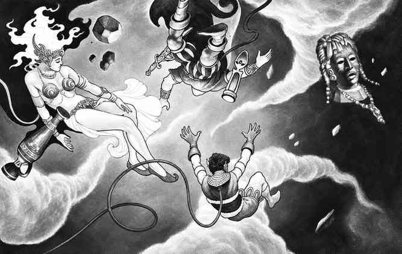

星界位面 · The Astral Plane
星界位面是一片向所有方向延伸的跨维度虚无。它没有真正的物质，只有断续的银色流体和连接各个位面的思维通道。星界连接原初位面与外层位面，是旅行者从一个世界前往另一个世界的最快路径之一。
星界的“地面”只是旅行者的心理参照。生物不会自然下落，方向由意志和感知决定；没有重力，也没有昼夜。旅行者通常以灵体形式到达星界，自己的银色灵魂之弦仍连接着原本的肉身。

本节内容
上一节：负能量拟元素位面：战斗、魔法与特征 · Negative Quasi-Planes: Combat, Magic, and Features
下一节：到达星界 · Reaching the Astral Plane